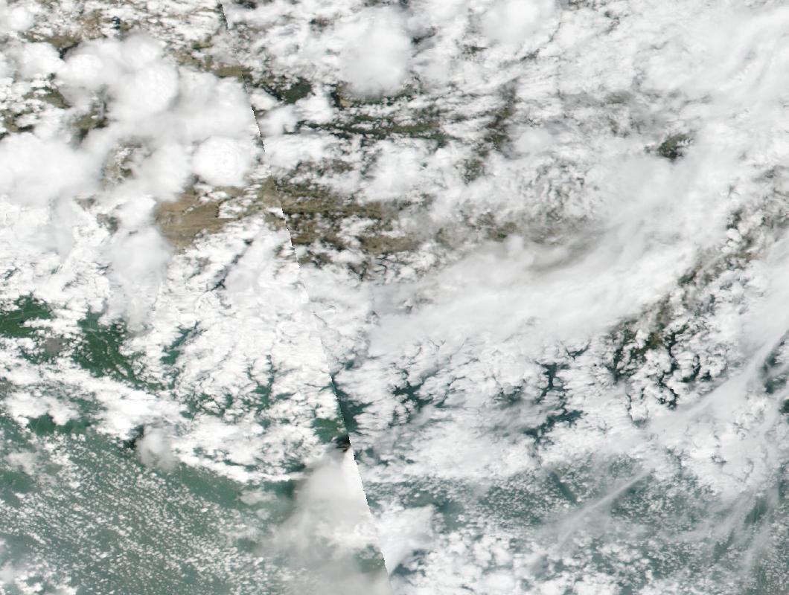
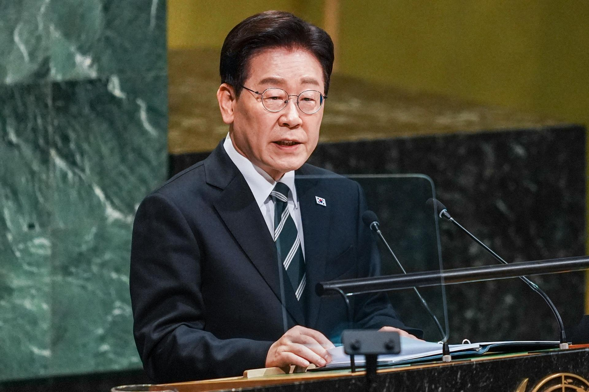
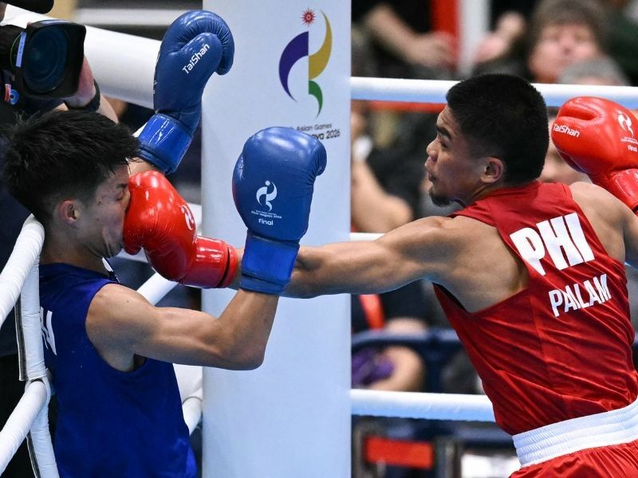
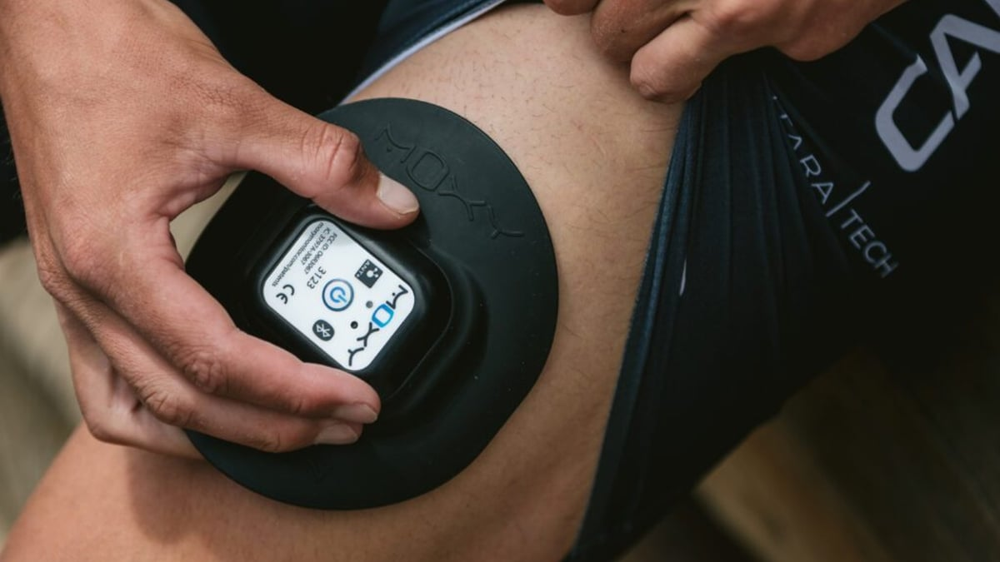

G7 agrees 100 million-barrel diesel and oil release after US pressure
2–3 Oct 2026
Nikkei / Reuters: G7 countries said they will coordinate an IEA release of 100 million barrels of diesel and crude over four months, front-loading diesel within 20 days, after Trump pressed Europe to cool fuel prices tied to the Iran war — and after Washington floated a possible US diesel export ban. Members also pledged not to ban energy-product exports among themselves.
Open Nikkei Asia
US sends a third carrier and ~10,000 more troops toward Iran theater
2–3 Oct 2026
Al Jazeera / WSJ desk: A US official said a third aircraft carrier strike group is heading to Middle East waters near Iran as the war enters month eight; total new sailors and Marines are pegged around 9,000–10,000. Trump has kept open “possible” fresh strikes after the Nov 3 midterms while indirect talks stay stuck.
Open Just News BD

Nepal to drain four glacial lakes after 1,400+ flood deaths
3 Oct 2026
ABC / Reuters: Nepal will study then drain Thulagi, Lower Barun, Lumding Tsho and Hongu II through gated structures — a multi-year, ~$50 million risk cut after August’s glacier-collapse floods. Combined toll: nearly 1,500 dead and about 5,800 still missing across Nepal and Tibet; only 112 bodies identified so far in Nepal.
Open ABC

Seoul threatens Kyiv over North Korean POW disclosure
2–3 Oct 2026
Korea Times: President Lee Jae Myung said Ukraine must apologize for revealing a transfer of two North Korean POWs to South Korea in a UN speech, which Seoul says breached a nondisclosure deal Kyiv denies. Experts say drastic cutoffs are unlikely given Western alignment; Seoul has given hundreds of millions in Ukraine aid.
Open Korea Times
Senate advances under-16 social media ban after school shootings
2 Oct 2026
Tribune: SB 2424 (Child Online Safety and Protection Act) passed second reading — no accounts under 16; ages 16–17 need third-party age checks. Padilla cites online radicalization after Tacloban, Ateneo de Zamboanga, and Banga campus shootings. Parent fines ₱5k–₱50k for helping bypass; platforms face ₱1M–₱20M per offense.
Open Tribune
PBBM at Patul Elementary: feeding + Kaagapay parent training
2 Oct 2026
Journal News: Marcos and Speaker Dy joined Angara at Patul Elementary (Santiago, Isabela) to spotlight Home-Grown School Feeding and Kaagapay — parent/caregiver sessions on positive discipline, values, bullying prevention, and digital safety. Parent ops: treat Kaagapay as the local toolkit that pairs with the Senate’s age-gate push.
Open Journal News
Australia defends under-16 social ban in High Court
1 Oct 2026
CathNews / eSafety desk: Canberra is defending its under-16 account ban on platforms as the law beds in — platforms carry the duty, not parents or schools. Desk read for PH families watching SB 2424: Australia is the template and the stress test; local schools still own wellbeing and cyberbullying response, not account policing.
Open CathNews
Asiad board: Yape gold lifts PH to 4-8-16; fifth gold slips
2–3 Oct 2026
Manila Times / GMA: Jeus Yape took mixed virtual taekwondo gold (PH’s fourth). Tachiana Mangin and Kurt Barbosa added taekwondo silvers; Carlo Paalam fell short in the boxing final. Haul as of Friday evening: 4 gold, 8 silver, 16 bronze — more medals than Hangzhou 2022, still short of the eight-gold target. Contests continue through 4 Oct.
Open Manila Times

Paalam settles for 55kg silver — split decision to Yamaguchi
2 Oct 2026
Philstar / Rappler: Olympian Carlo Paalam lost a 3-2 split decision to Japan’s Rui Yamaguchi in the Asian Games men’s 55kg final at Nishio Gymnasium. Paalam swept the third round on all cards but dropped the first two; the 16-year PH boxing gold drought continues.
Open Philstar

Crew-13 onboard; Crew-12 may undock as early as Monday
2–3 Oct 2026
NASA: After a record 7h55m flight, Watkins, Delaney, Kutryk, and Teteryatnikov are on station (crew 11). Saturday unpack and emergency briefings; Sunday Meir hands ISS command to Dubrov. Earliest Crew-12 splashdown window is 5 Oct pending California weather.
Open NASA

Garmin confirms Moxy Monitor acquisition — Muscle Battery path
28 Sep–3 Oct 2026
Wareable / Gadgets&Wearables: Garmin confirmed it bought muscle-oxygen sensor maker Moxy Monitor, with no price or roadmap. Desk read: the deal fills the hardware gap behind Garmin’s “Muscle Battery” trademark (SmO2 analysis) — expect a pod/strap accessory, not a wrist-only Watch reading.
Open Gadgets&Wearables